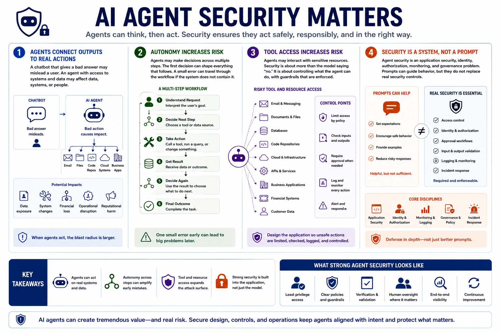

AI Agent Security
Why Agent Security Matters
Connecting to LMS... Progress: in progress
Version 1.0 | Date: 2026-06-16 | AI agent security guidance evolves quickly. Verify current recommendations against official project, vendor, and security guidance.

Narration
AI agent security matters because agents can connect model outputs to real actions. A chatbot that gives a bad answer may mislead a user. An agent with access to email, files, code repositories, cloud systems, or business applications may affect data, systems, or people.
Autonomy increases risk because the agent may make decisions across multiple steps. The first decision may shape the next tool call, the next data lookup, and the next action. A small error can travel through the workflow if the system does not contain it.
Tool access increases risk because the agent may interact with sensitive resources. Security is not only about making the model refuse unsafe requests. It is about designing the surrounding application so unsafe actions are limited, checked, logged, and controlled.
Agent security is an application security, identity, authorization, monitoring, and governance problem. Prompting can guide behavior, but prompts do not replace access control, approval workflows, input and output validation, logging, or incident response.